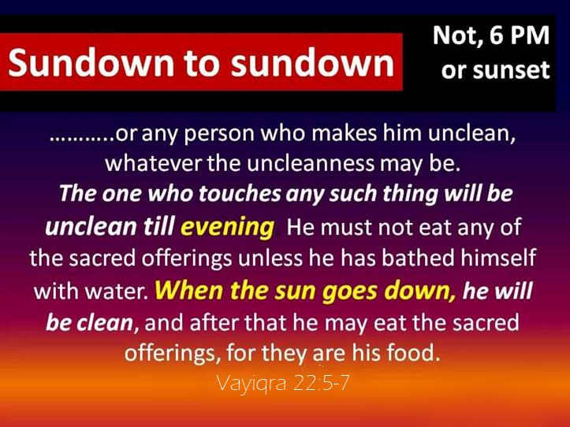

Contents

The 24-Hour Calendar Day
Darkness to Light Parallel
Romiyim/Romans 1311The hour has already come for you to wake up from your slumber, because our salvation is nearer now than when we first believed. 12The night is nearly over; the daytime is almost here (darkness to light metaphor of a 24-hour day). So let us put aside the deeds of darkness and put on the armor of light.
Everything in the material world is a reflection of a higher spiritual reality. I have searched extensively for a spiritual truth that aligns with a day starting in the light. I cannot find any… not a single one.
Qorintiyim Aleph/1 Corinthians 214The person without the Spirit does not accept the things that come from the Spirit of יהוה but considers them foolishness, and cannot understand them because they are discerned only through the Spirit.
We make mistakes and stray from His spiritual guidelines. Originally, according to the Creation account, the Earth was enveloped in darkness. Then, יהוה spoke, and light appeared. Morning followed the darkness, leading to daylight, and then evening, marking the end of the day…. for 7 days. 1, 2, 3, 4, 5, 6….7
The “day” (not to be confused with “daytime”) is a very important parallel that is confirmed over and over. As “time” passes, יהוה has built in a witness of His Plan of Salvation. We see Yahushua’s life written in the stars over the course of a year. We see the celebration of the coming Kingdom reign every 7 days … The Shabbat.
The 24-hour day serves as an essential practice or preparation every day. What is the actual purpose of the "24-hour Day" rehearsal? Once we establish the purpose of the practice, our inquiry is promptly answered. The day starts at sunset, just as it is written in the Creation Story.
The Witness of Scripture
Let us look at the confirming witness of יהוה’s Word as Scripture always defines Scripture. What does Scripture say? Light to darkness or darkness to light?
The Scriptures show that we are born in darkness (the womb) and physically come into the light at the start of our lives. However, our spiritual journey begins in darkness and we must progress through a lifetime to find enlightenment.
Yeshayahu/Isaiah 92The people who walk in darkness Will see a great light; Those who live in a dark land, The light will shine on them (Darkness to Light)
Luqas/Luke 179TO SHINE UPON THOSE WHO SIT IN DARKNESS AND THE SHADOW OF DEATH, To guide our feet into the way of peace (as the Light of the World. Darkness to Light)."
Mattithyahu/Matthew 416 "THE PEOPLE WHO WERE SITTING IN DARKNESS SAW A GREAT LIGHT, AND THOSE WHO WERE SITTING IN THE LAND AND SHADOW OF DEATH, UPON THEM A LIGHT DAWNED." (Darkness to Light)
Yochanan/John 15The Light shines in the darkness, and the darkness did not comprehend it. (Darkness to Light)
Qorintiyim Bet/2 Corinthians 46For יהוה, who said, "Light shall shine out of darkness," is the One who has shone in our hearts to give the Light of the knowledge of the glory of יהוה in the face of יהושע. (Darkness to Light)
Kepha Aleph/1 Peter 29But you are A CHOSEN RACE, A royal PRIESTHOOD, A SET-APART NATION, A PEOPLE FOR יהוה's OWN POSSESSION, so that you may proclaim the excellencies of Him who has called you out of darkness into His marvellous light; (Darkness to Light)
Eph’siyim/Ephesians 58 for you were formerly darkness, but now you are Light in יהוה; walk as children of Light (coming out of the darkness. Darkness to Light)
Yochanan/John 812Then יהושע again spoke to them, saying, "I am the Light of the world; he who follows Me will no longer walk in the darkness, but will have the Light of life." (Darkness to Light)
Ma’asei/Acts 2618 to open their eyes so that they may turn from darkness to light and from the dominion of Satan (darkness) to (the dominion of) יהוה (light), that they may receive forgiveness of sins and an inheritance among those who have been sanctified by faith in Me.' (Darkness to Light)
Mattithyahu/Matthew 1027 "What I tell you in the darkness, speak in the light; and what you hear whispered in your ear, proclaim upon the housetops. (Darkness to Light)
Marqos/Mark 422 "For nothing is hidden (in the darkness), except to be revealed (in the light); nor has anything been secret (kept in the dark), but that it would come to light. (Darkness to Light)
Romiyim/Romans 1311The hour has already come for you to wake up from your slumber, because our salvation is nearer now than when we first believed. 12The night is nearly over; the daytime is almost here (darkness to light metaphor of a 24-hour day). So let us put aside the deeds of darkness and put on the armor of light. (Darkness to Light)
To mention a few.
Let’s examine the physical Creation’s witness.
Every year's night precedes every year's day.
The winter season is often seen as a period of darkness in the yearly cycle, as the lack of sunlight causes everything to wither and die. Spring and Summer are like the daytime of the year, and there is a seven-month-long "annual day" that follows the darkness of winter. We celebrate the Plan of Salvation through יהוה's Set-Apart Days while being in the light.
This yearly celebration at the North Pole follows a period of darkness lasting five months at the South Pole known as Annual Night. In the North Pole, this is expressed as they experience a 7-month period of continuous daylight with no nighttime.
What Does the Heavenly Scroll Proclaim?
What is seen in The Heavenly Scroll. Yahushua was born under the sign of Virgo, when the Sun is in that constellation. The Feast of Tabernacles occurs in the autumn, with the setting of the sun. His life journey unfolds over the course of a year as he conquers the challenges (defeats the Dragon) and brings light to the world.
The Plan of Salvation reaches its pinnacle when the Sun is in the zodiac sign of Leo during the summer months (August-September), representing the brightness of daylight.
We see that The Heavenly Scroll is a “Divine Day” of יהוה This is what Avraham saw:
Yochanan/John 856Your father Abraham rejoiced at the thought of seeing my DAY (when he witnessed The Heavenly Scroll); he saw it and was glad.
Sha’ul then told the Galatians that they had no excuse for denying that Yahushua was the Messiah because he was “portrayed as crucified before their very eyes”, in the stars!
Galatiyim/Galatians 31O senseless Galatians! Who has put you under a spell (obviously they were denying the Prophets spoke of Yahushua), not to obey the truth – before whose eyes יהושע Messiah was clearly portrayed among you as impaled?
What was Sha'ul trying to convey? He referenced Avraham and how "Scripture" or The Heavenly Scroll, according to Bereshit/Genesis 15:5, predicted in advance that יהוה would justify the Gentiles, as outlined in the Gospel in the stars revealed to Avram. He directed their attention to Bereshit 15:5.
Galatiyim/Galatians 37Understand then (Yahushua's "day" foretold in the stars), that those who have faith are children of Avraham. 8Scripture (the word written in the heavens Tehillim/Psalm 199:89) foresaw that יהוה would justify the Gentiles by faith, and יהוה announced the gospel in advance to Avraham (via The Heavenly Scroll Bereshit/Genesis 15:5; saying): “All nations will be blessed through you.”
Bereshit/Genesis 155And He brought him outside and said, “Look now toward the heavens, and count the stars if you are able to count them.” And He said to him, “So are your seed.”
Sha'ul questions if people on Earth have not heard, but then states confidently that they have. He then quotes David from Tehillim/Psalms, who says that the heavens continually speak to all people and describes the Zodiac in elaborate terms.
Sha’ul refers to “hearing” and “voice” in a metaphorical way to illustrate the connection between the physical and spiritual aspects. He emphasizes that the origin of "faith" is derived from the message conveyed in the stars during creation. He referred to his "day" as the period from the beginning of winter darkness to the 7-month long day of the year.
What about the life of the Messiah?
The Messiah Yahushua transitioned from the darkness of the womb to the light of birth at his arrival. In contrast to common misconceptions, Yahushua was not יהוה, and he was not even acquainted with יהוה.
Yahushua, like all humans, was initially born into spiritual darkness, but he evolved in knowledge and spirit to eventually walk in the light of our Father, as he was opposed to יהוה. The phrase "in the flesh" refers to being devoid of any divine influence and inclined towards sin, opposing יהוה.
Flesh - g4561 ‘sarki’ - Thayer: 2a) the body of a man 2b) used of natural or physical origin, generation or relationship 2b1) born of natural generation 4) the flesh, denotes mere human nature, the earthly nature of man apart from divine influence, and therefore prone to sin and opposed to God.
Therefore, Yahushua was also born into a state of spiritual ignorance. The body evolved and advanced towards enlightenment. This is affirmed repeatedly in Scripture. Yahushua showed us The Way we all must walk, embodying the rules rather than being an exception to them.
Luqas/Luke 240And the child (יהושע) grew (out of darkness) and became strong in spirit (the Light), (and became) filled with wisdom (Light); and the grace (favor) of יהוה was upon Him. ... 52And יהושע increased in wisdom and (increased in) stature, and (increased) in favor with יהוה and men (as he progressed out of the darnkess and into the Light of the Truth).
Ib’rim/Hebrews 58 though He was a Son, yet He learned obedience (to יהוה) by the things which He suffered (discipline as יהוה brought His son from darkness to light). 9And having been perfected (in the light), He became (after coming out of the darkness) the author of eternal salvation to all who obey Him (and walk that same path called The Way)
The Messiah had to endure the experience of death as a period of deep darkness. This darkness symbolizes the state of death as being without light and hope.
Kepha Bet/2 Peter 217 "These are wells without water, clouds that are carried with a tempest; to whom the black darkness is reserved forever."
Before he ascended into the "heavens" after being illuminated by the dazzling light of the Resurrection:
Romiyim/Romans 12 concerning יושע, which יהוה promised beforehand through His prophets in the Set-Apart Scriptures (both The Heavenly and Earthly Scrolls, he did not pre-exist), 3concerning His Son, who was born of a descendant of David (through both parents) according to the flesh (into darkness), 4who was declared (Divine) the Son of יהוה with power (Light) by the resurrection from the dead (of darkness), according to the Spirit of set-apartness (יהוה’s Spiritual Seed), יהושע the Messiah, …
The belief that the Shabbat starts at sunrise is a well-known example of a misconception. Created by worldly thoughts, taking words at face value, relying on human reasoning, and lacking a deeper spiritual understanding.
These “teachers” who want to twist the Shabbat and the order of the 24-hour day (which is a physical to Spiritual metaphor of the process we follow to come to the knowledge of the Truth or light) have no Spiritual Wisdom.
They are twisting the definition of a 24-hour period known as a "day" and the abbreviated form for "daytime" or the 12-hour period of daylight also referred to as "day". They are then taking snippets from the scriptures, distorting the straightforward language of the Creation Account, and failing to understand the spiritual truths found in the daily enactment of The Way (transitioning from darkness to light). They disregarded the teachings of the Scriptures, The Heavenly Scroll, the Feast Cycle, and the Messiah's life.
Darkness always comes before light.
One thing to reflect on is that darkness results from the lack of light. Darkness can exist independently of light and is a universal state that exists outside of light. Light, on the other hand, needs to come from a specific origin. It can only thrive within darkness and cannot survive outside of it.
Put that in plain English… you must have darkness for there to be a “day”. Light has no meaning outside of shining in the pre-existing darkness!